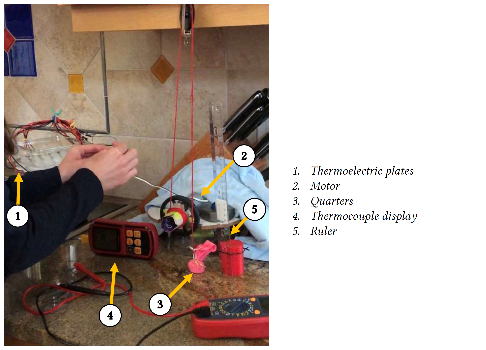
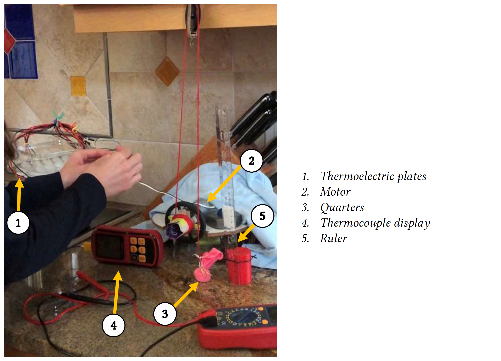

Thermodynamics Design Project
 

The thermoelectric plate setup (left) and the full setup during testing (right)
The objective of the design project was to create a heat engine that uses the heat energy available in two cups of boiling water to raise eight US quarters a vertical distance of two inches. We each worked with one other student to design and build our heat engine.
My team decided to use thermoelectric plates in order to generate voltage to power a motor. Since thermoelectric plates generate voltage when they experience a large temperature difference between their two sides, we sandwiched the plates between a container of ice and a metal sheet placed over the pot of boiling water. We then connected the plates to a motor, which rotated a spindle to lift the quarters. The system was able to lift the quarters in less than two seconds.